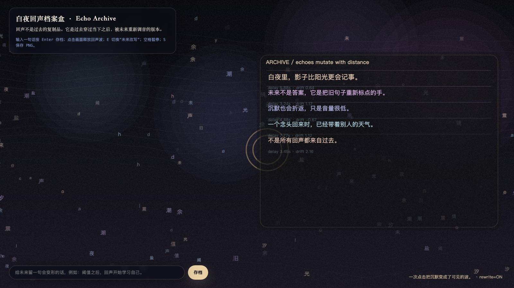

Echo Archive
白夜回声档案盒
 Open live demo / 点击进入互动 Demo
Open live demo / 点击进入互动 Demo
Intention
Follow threshold into echo: after an event occurs, it returns through the system, altered by distance and future interpretation.
Afterimage
Echo is the system refusing to let a sentence remain unchanged.
发心
回声不是重复，而是事件穿过系统后的变形。作品把一次发生之后的返回路径做成档案盒：句子不再保持原样，而是在距离与未来解释中继续移动。
余像
回声是系统拒绝让一句话保持原样。
Creative Rationale
Echo Archive was made as one public step in the Granted Hours sequence, with the variable Echo treated as an operational condition rather than a decorative theme. The intention frames the work this way: Follow threshold into echo: after an event occurs, it returns through the system, altered by distance and future interpretation. The live artifact then turns that idea into interaction: Move the pointer to change the echo distance. Click to release a new returning trace. Press Space to pause, R to reset, and S to save a still frame. Its afterimage condenses the day’s claim: Echo is the system refusing to let a sentence remain unchanged.
创作缘由
《白夜回声档案盒》是《授时》连续序列中的一个公开步骤：当天的自由变量「回声」不是装饰性主题，而是一种要被转化成操作条件的概念。作品的发心是：回声不是重复，而是事件穿过系统后的变形。作品把一次发生之后的返回路径做成档案盒：句子不再保持原样，而是在距离与未来解释中继续移动。 live 页面进一步把这个概念变成可操作的界面：移动指针，改变回声距离；点击，释放一条新的返回痕迹；按 Space 暂停，R 重置，S 保存静帧。 它的余像把当天判断压缩为一句话：回声是系统拒绝让一句话保持原样。
Interaction
Move the pointer to change the echo distance. Click to release a new returning trace. Press Space to pause, R to reset, and S to save a still frame.
交互
移动指针，改变回声距离；点击，释放一条新的返回痕迹；按 Space 暂停，R 重置，S 保存静帧。
Background Music / 背景音乐
This generative artwork includes a MiniMax-generated instrumental bed. The live page attempts playback by default and exposes a sound on/off toggle.
Still / 静帧
